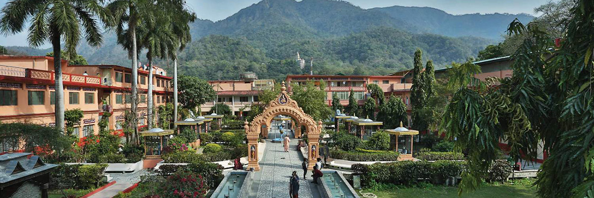
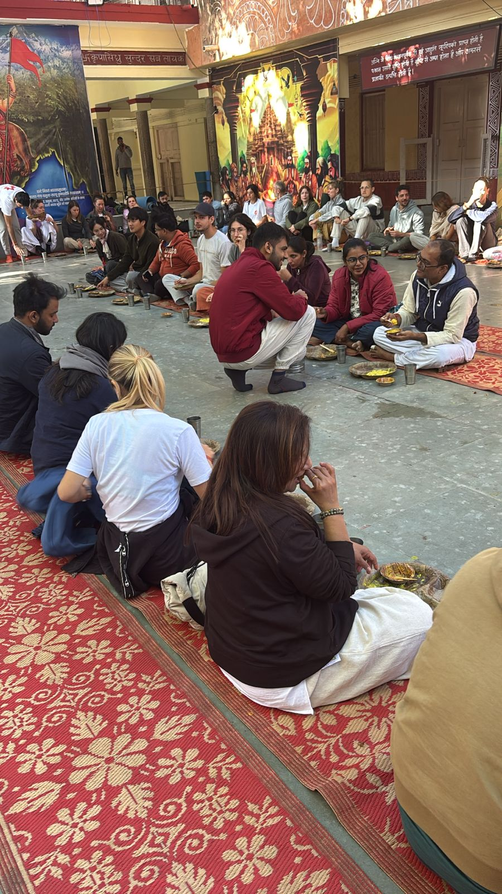
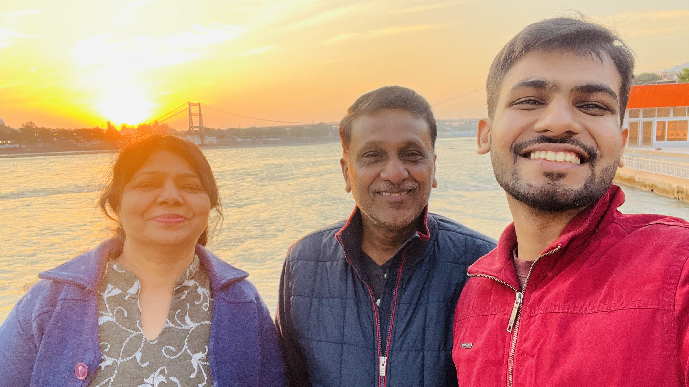

Four days at Parmarth Niketan: The Lesson, Love, and Karma Yoga
Last year in December 2024, I decided to take my parents on a different voyage and experience ashram life with
them in Rishikesh. The experience was magnificent and since now I have decided that no consumption is
complete without creating, I decided to document my trip, as that's the only way I now know to return back from a trip.

Heaven exists if you look for it
Who should read this?
This blog is not a travel guide for rishikesh or even Parmarth Niketan
for that matter. It is simply my attempt to share some profound lessons I learned
while staying in Ashram. I hope this helps the reader to form a world view of his own.
The Place
Rishikesh is the land of spiritual awakening and mystical energies. At first look Rishikesh might also look like the
perfect setting for the rebellious Californian 60s - people in Radhe Krishna attires, high on life and traveling far
from their hometowns in search of peace and probably some hashish.
Still, a deeper look sets the scene for the magical Ganges flowing through nestled Himalayas in all its glory. Pure
and pristine with lakhs of devotees bowing down and taking the holy dip. Yet, Ganges is as untouched as a newly
blossomed flower.
Set right on the Ganges' banks is another heavenly abode - Parmarth Niketan. Situated in Swarg Ashram, the location
is the envy of all luxury realtors and sets the scene for a perfect seven-star luxury vacation with rooms offering a
view of the Ganges that I’m sure is no less than Marina Bay Sands.
As soon as you set foot in the Ashram you know why peace is a verb. You can feel peace in action and it’s no more a
passive realisation. You see the birds chirping, Ganges flowing, dogs playing in the garden, squirrels eating the
berries, and humans - enjoying the bounties of life in perfect rhythm with nature.
Why did I choose an Ashram as the place for vacation?
Every hotel or luxurious property I have been to on a vacation is filled with a lot of pretense.
I wear fancy sandals or Crocs, attire that I would normally never don at home, or pretend to eat at the breakfast table like I’m the last of royalty.
This time, I wanted a vacation where there was no pretense, just me and my parents at home away from home.
I wanted to give them a respite from their life where they always play different roles, and for a moment, I wanted them and me to JUST BE.
Maybe that’s why they call Parmarth your Himalayan Home away from Home.
If you want to be happy, be. - Leo Tolstoy
The Lesson
Parmarth vs Swarth: The Balance between self and service.
The word Parmarth is traditionally formed from two Sanskrit roots — "Param" (Highest) and "Arth" (Meaning) — translating to "the highest meaning" or "supreme purpose."
While this interpretation holds true, my time at the Ashram led me to uncover a deeper insight.
I began to see Parmarth not just as a lofty ideal but as a counterpart to the word Swarth, where "Swa" (Self) and "Arth" (Purpose) combine to mean "self-interest."
But then a paradox emerged: isn’t the pursuit of Parmarth — the highest purpose — inherently selfish too? After all, why do we seek a higher meaning if not to feel complete within ourselves?
Could it be that the path to Parmarth begins with Swarth — the personal desire to find wholeness?
This led me to a new way of dissecting these words:
Swarth becomes "Swa" (Self) + "Arth" (Purpose) — "the purpose of the self."
Parmarth, on the other hand, becomes "Par" (Others/Paraya) + "Arth" (Purpose) — "the purpose of serving others."
And therein lies the realization: to truly understand the self, one must go beyond it, to transcend personal gain and dedicate oneself to the service of others.
Perhaps the highest meaning isn’t found by seeking it for oneself, but by offering oneself to something greater.
Karma Yoga
Did I tell you I went to the Ashram to attend a Yoga Festival? Never mind; I told you right now.
Every morning, we used to wake up at 5:30 AM and then do different types of Yoga throughout the day.
In between, there were sattvic meals that all the participants had heartily.
During these interactions, I became friends with the volunteers in the organizing team, and therefore I decided that I should help serve people with the volunteers instead of constantly snacking with other participants.

Yours truly pretending to be a volunteer.
And this is when I experienced a profound insight—I enjoyed serving the food much more than consuming it without any thought.
Okay, I'm not going to lie—my back hurt serving the Dal and Roti from those big containers, but I still enjoyed it to the point where I only wanted to do this.
Why do I say this when my back hurt, I was hungry, and I was serving food without any remuneration? I now know the answer — the act of service increased my belongingness with all the participants.
Between those morsels of food were moments of genuine connection with people from all over the world, and no common language was required to form this connection.
And this is the essence of Karma Yoga, I believe. Since society is a construct that requires constant exchange between people, we must give more than what we take because that’s how we build trust with people.
This trust is what builds fulfilling bonds like relationships, and this trust is what builds necessary pursuits like business.
Love
I’ve been to Rishikesh umpteen times until now. And most of the times, it has been alone on a solo trip to find the proverbial self and go deep within.
It was different this time.
I went with my parents, and I wanted them to experience the Ashram life.
At the beginning, I was a little apprehensive about how I could make it a good experience for them, but then I realised that my parents were already loving every bit of the Ashram.
When I asked what made them love the experience at the Ashram, they answered that it was my excitement that made them enjoy it.
This made me ponder what love is. We usually associate love with what we receive and get from our loved ones, while in reality, it is an inside-out emotion.
Love is in giving, not receiving.

Parents aging like fine wine with your old monk
If we love someone, we do not want them to do the things we like - we accept them for the things they like.
This is what parents do: they accept us for who we are, not what they want us to be. That’s what love is.
Whenever a conflict arises with our loved ones, we usually blame love for the things that don’t work our way.
If we wanted things to work our way, was it love or some other emotion that took over?
We are quick to blame love, but maybe it is ego, jealousy, anger, or some other vile emotion that we are not ready to let go of.
What's your definition of love?
When you love someone, you love the person as they are, and not as you'd like them to be.
- Leo Tolstoy